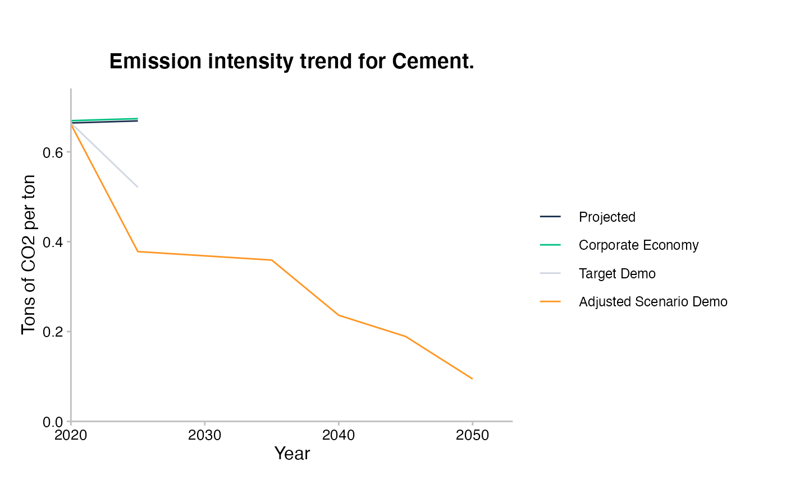
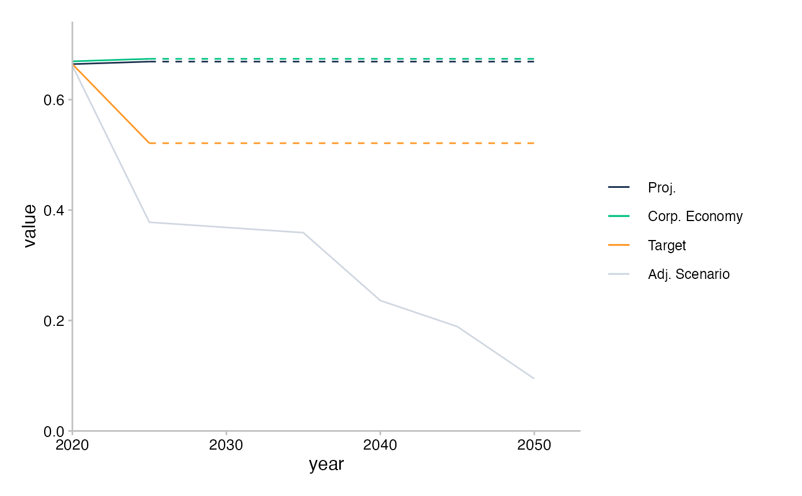
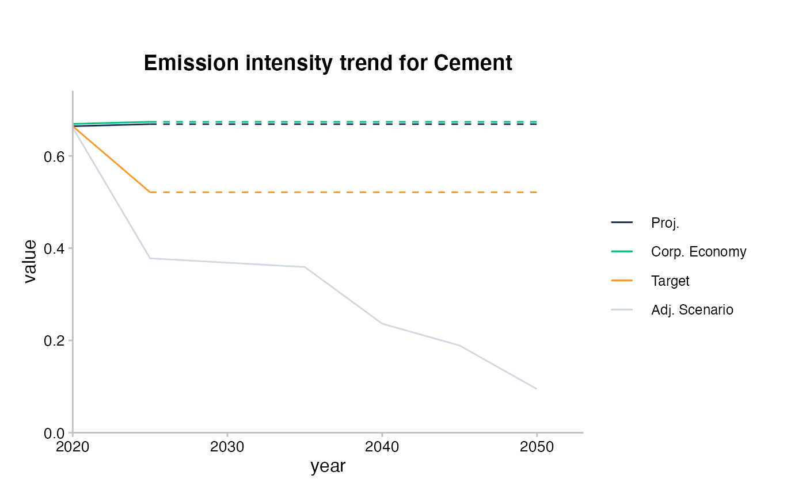

Creates a time line plot
plot_timeline(data, specs = timeline_specs(data))
| data | Pre-processed data for the chart, with columns: year, value, line_name. |
|---|---|
| specs | Dataframe containing order of lines, their labels and colour names from the r2dii_colours palette. |
An object of class "ggplot".
timeline_specs
#> #>#> #> #>#> #> #># Using custom preparation and specs cement_data <- sda_target %>% prepare_for_timeline( sector_filter = "cement", year_start = 2020, year_end = 2050, column_line_names = "emission_factor_metric", value_to_plot = "emission_factor_value", extrapolate_missing_values = TRUE ) # Combine `timeline_specs()` and `dput()` or `datapasta::tribble_paste()` to # produce the default `specs`; then adapt it as you wish: custom_specs <- tribble( ~line_name, ~label, ~colour_hex, "projected", "Proj.", "#1b324f", "corporate_economy", "Corp. Economy", "#00c082", "target_demo", "Target", "#ff9623", "adjusted_scenario_demo", "Adj. Scenario", "#d0d7e1" ) # For reference r2dii_palette_colours()#> # A tibble: 9 x 2 #> label colour_hex #> <chr> <chr> #> 1 dark_blue #1b324f #> 2 green #00c082 #> 3 orange #ff9623 #> 4 grey #d0d7e1 #> 5 dark_purple #574099 #> 6 yellow #f2e06e #> 7 soft_blue #78c4d6 #> 8 ruby_red #a63d57 #> 9 moss_green #4a5e54plot_timeline(cement_data, specs = custom_specs)# Customize as usual with ggplot2 plot_timeline(cement_data, specs = custom_specs) + labs(title = "Emission intensity trend for Cement")